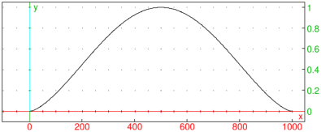

21.1.1 Hierarchical clustering
The cluster
command is used for hierarchical agglomerative clustering
of custom data by using a custom distance function.
-
cluster takes one or more arguments:
-
data, a list of data points.
- Optionally, opt, a sequence of options which may contain the following:
-
k or count=k, where k is a positive integer
specifying the number of clusters (unset by default).
- count_inf=kl, where kl is a positive integer specifying the
minimal number of clusters (unset by default).
- count_sup=ku, where ku is a positive integer specifying the
maximal number of clusters (by default, ku=16).
- type=linkage, where linkage is a string specifying
the linkage method. Avaliable methods are:
single (the default), complete, average, weighted,
and ward.
- distance=dist, where dist is a distance function. By default,
the squared Euclidean distance function distance2 is used unless data
is a list of strings, in which case Levenshtein distance is used.
For example, the taxicab distance function could be defined by typing:
| taxicab:=(p1,p2)->l1norm(p1-p2) |
- index=ind, where ind is a string or a list of strings
specifying the index function(s) used for selecting the optimal number of clusters (unset by default).
Available index functions are:
silhouette, mcclain-rao, dunn, and all.
ind may also take a boolean value, in which case no index is used
(ind=false) or the silhouette index is used (ind=true).
- output=out, where out is one of the following:
-
part, for outputting the partition of data into clusters.
- list, for outputting the list of cluster indices for data points (the default).
- plot, for outputting a colored visualization of data points with additional
specifications given in display option (see below). Note that this is possible only with
two- and three-dimensional numerical data.
- count, for outputting only the number of clusters.
- index, for outputting the list of values of the (first) used index.
- tree, for outputting a dendrogram drawing which visualizes the linking process.
- display=disp, where disp is a configuration for plot output
(by default, points are drawn as dots of width 2).
- color=colors, where colors is a list of colors that will be used
for cluster coloring in the plot output mode (by default, the standard palette of first 16 colors
is used, with white and yellow replaced by more visible colors).
- labels=lab, where lab is a boolean value which specifies
whether to show data points in the dendrogram.
- cluster(data ⟨,opt ⟩) returns
the result as specified by the output argument (see above).
- Hierarchical clustering is slower than the k-means algorithm (see Section 21.1.2)
but may produce a better classification of the data. Hierarchical clustering is also a method of
choice for custom data types and distance functions.
- If more than one index is computed in a clustering process, then the optimal number of clusters
is decided by voting: the number which was selected by most indices is used.
Examples
We apply cluster command to an “aggregation”
shape dataset (see here).
The dataset is loaded from file in a table cell in Xcas and associated with
the variable data. We use the average linkage method and silhouette
index (which is used by default if index=true). By setting output parameter
to plot, we obtain a visualization of colored clusters as shown in Figure 21.1.

| Figure 21.1: Clustering in Xcas |
For string data, Levenshtein distance is used by default (see Section 5.2.16).
| cluster(["cat","mouse","rat","spouse","house","cut"],output=part) |
|
| |
| ⎡
⎢
⎣ | | “cat” | “rat” | “cut” |
| “mouse” | “spouse” | “house”
|
| ⎤
⎥
⎦ |
|
| | | | | | | | | | |
|
In the following example we split genomic sequences into three clusters
by using the average linkage and Hamming distance function.
| data:=["GTCTT","AAGCT","GGTAA","AGGCT","GTCAT","CGGCC",
"GGGAG","GTTAT","GTCAT","AGGCT","GTCAG","AGGAT"]:;
cluster(data,type="average",count=3,distance=hamdist,output=part) |
|
| |
[ | ⎡
⎣ | “GTCTT”,“GTCAT”,“GTTAT”,“GTCAT”,“GTCAG” | ⎤
⎦ | , |
| | | | | | | | | |
| | ⎡
⎣ | “AAGCT”,“AGGCT”,“CGGCC”,“AGGCT”,“AGGAT” | ⎤
⎦ | , |
| | | | | | | | | |
| | | | | | | | | | | |
|
To display the dendrogram, enter:
| cluster(data,type="average",count=3,distance=hamdist,output=tree) |
